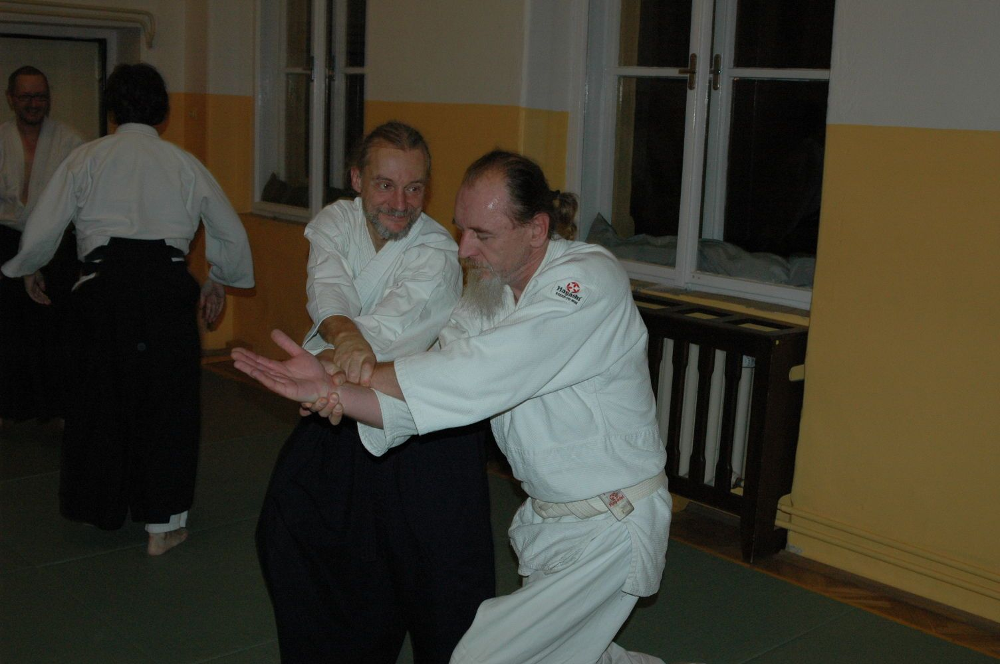
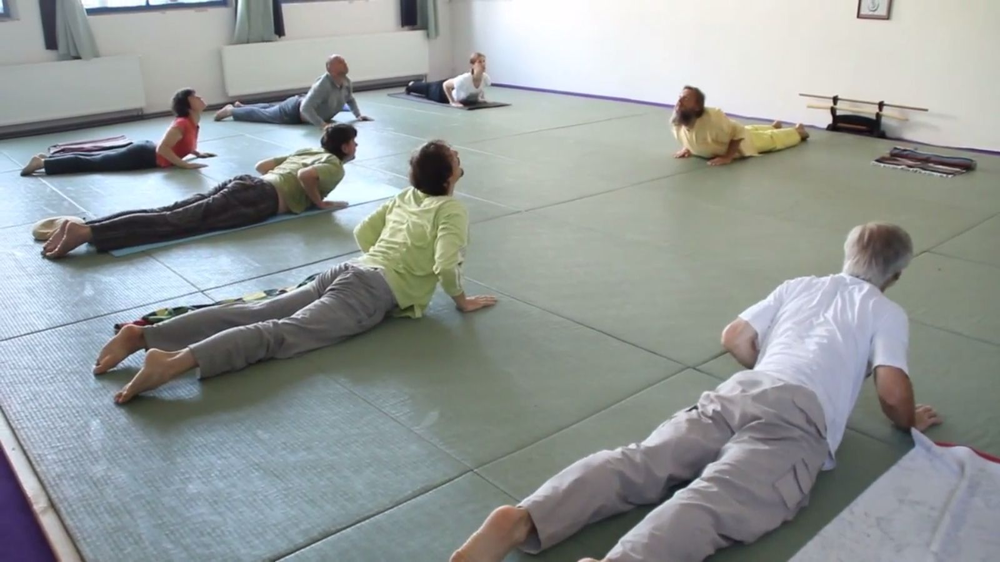
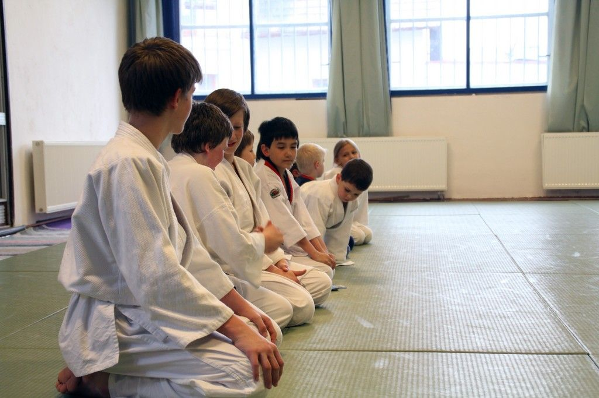

Aikido je nenásilné moderní japonské bojové umění, které rozvíjí tělo i ducha. Jeho název spojuje tři znaky: ai (harmonie), ki (životní energie) a dó (cesta).
Založil ho Morihei Ueshiba (1883–1969) jako umění, které klade důraz na mentální i fyzický rozvoj a odmítá soutěžní pojetí. Pro mnohé praktikující se tak aikido stává jakousi životní filosofií.

Na dójó Na Cestě cvičíme Rádža jógu. Cvičení je vhodné pro každého a nevyžaduje žádné speciální vybavení — stačí pohodlný oděv a trocha vůle cvičit.
Pravidelná praxe přináší řadu přínosů:


Pohybová příprava spojující aikido a jógu pro předškolní děti a prvníčky.
Zjistit více
Oddíl pro školní děti a mládež všech úrovní — od začátečníků po pokročilé.
Zjistit více
Nábor probíhá celý rok. První trénink je zdarma, naučit se aikido není nikdy pozdě.
Zjistit víceCvičíme Rádža jógu — vhodná pro každého, stačí pohodlný oděv a vůle cvičit.
Zjistit více